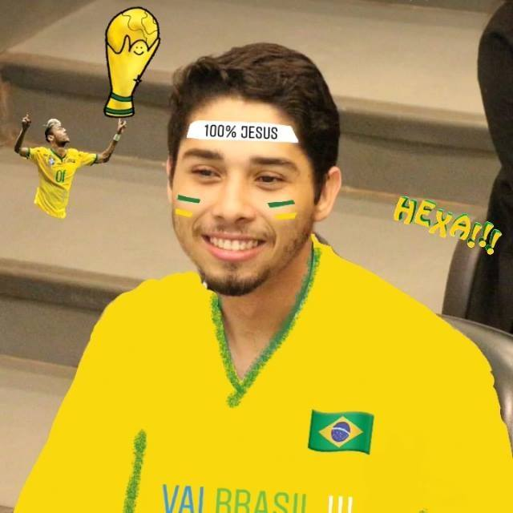
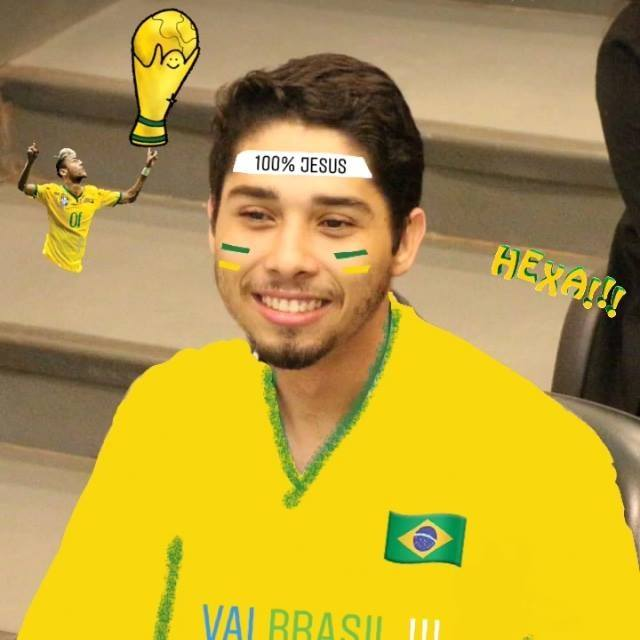

Bruno Oliveira Dantas
 

Olá, sou diretor de marketing da orc'estra, e para mim gamificação é de certo modo uma forma de arte, no qual proporciona sensações e sentimentos para a pessoa que está recebendo tal "presente". É um movimento com embasamento na área da psicologia e conceito de jogos, e traz mudanças nos comportamentos das pessoas em prol de algum objetivo utilizando mecanismo de jogos para tal.